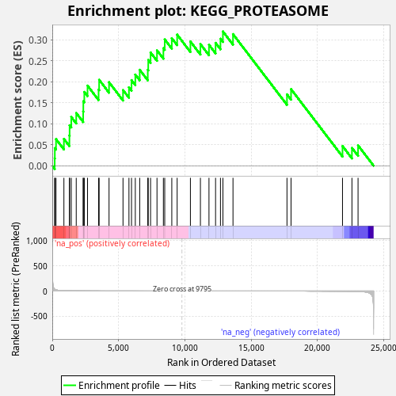
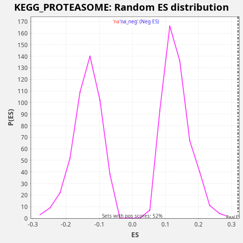

| Dataset | LabCL |
| Phenotype | NoPhenotypeAvailable |
| Upregulated in class | na_pos |
| GeneSet | KEGG_PROTEASOME |
| Enrichment Score (ES) | 0.31946787 |
| Normalized Enrichment Score (NES) | 2.3945756 |
| Nominal p-value | 0.0 |
| FDR q-value | 0.0061248057 |
| FWER p-Value | 0.03 |

| SYMBOL | RANK IN GENE LIST | RANK METRIC SCORE | RUNNING ES | CORE ENRICHMENT | |
|---|---|---|---|---|---|
| 1 | PSMB8 | 184 | 33.731 | 0.0174 | Yes |
| 2 | PSME1 | 193 | 32.299 | 0.0421 | Yes |
| 3 | PSMB9 | 283 | 23.028 | 0.0634 | Yes |
| 4 | PSME2 | 878 | 5.508 | 0.0638 | Yes |
| 5 | PSMD13 | 1293 | 2.846 | 0.0717 | Yes |
| 6 | POMP | 1308 | 2.754 | 0.0962 | Yes |
| 7 | PSMB10 | 1433 | 2.346 | 0.1160 | Yes |
| 8 | PSMB7 | 1808 | 1.489 | 0.1256 | Yes |
| 9 | PSMC3 | 2332 | 0.884 | 0.1290 | Yes |
| 10 | PSMC2 | 2343 | 0.878 | 0.1536 | Yes |
| 11 | PSMD2 | 2417 | 0.814 | 0.1756 | Yes |
| 12 | PSMA4 | 2660 | 0.660 | 0.1906 | Yes |
| 13 | PSMD14 | 3494 | 0.337 | 0.1811 | Yes |
| 14 | PSMA1 | 3536 | 0.328 | 0.2044 | Yes |
| 15 | PSMA5 | 4283 | 0.189 | 0.1986 | Yes |
| 16 | PSMA6 | 5337 | 0.089 | 0.1801 | Yes |
| 17 | PSMD6 | 5785 | 0.064 | 0.1867 | Yes |
| 18 | PSMA3 | 5979 | 0.055 | 0.2037 | Yes |
| 19 | PSMC4 | 6265 | 0.044 | 0.2169 | Yes |
| 20 | PSMD11 | 6597 | 0.033 | 0.2282 | Yes |
| 21 | PSMB2 | 7205 | 0.019 | 0.2281 | Yes |
| 22 | PSMD7 | 7241 | 0.018 | 0.2517 | Yes |
| 23 | PSMB3 | 7416 | 0.015 | 0.2695 | Yes |
| 24 | PSMC6 | 7901 | 0.009 | 0.2745 | Yes |
| 25 | PSMD8 | 8383 | 0.004 | 0.2796 | Yes |
| 26 | PSMC1 | 8485 | 0.004 | 0.3005 | Yes |
| 27 | PSMB4 | 9018 | 0.001 | 0.3035 | Yes |
| 28 | PSMA2 | 9422 | 0.000 | 0.3118 | Yes |
| 29 | PSMC5 | 10422 | -0.000 | 0.2956 | Yes |
| 30 | PSMA7 | 11177 | -0.002 | 0.2894 | Yes |
| 31 | PSMB5 | 11823 | -0.005 | 0.2878 | Yes |
| 32 | PSMD3 | 12320 | -0.009 | 0.2923 | Yes |
| 33 | PSME3 | 12690 | -0.013 | 0.3020 | Yes |
| 34 | PSMD4 | 12874 | -0.015 | 0.3195 | Yes |
| 35 | PSMD12 | 13635 | -0.028 | 0.3131 | No |
| 36 | PSMD1 | 17708 | -0.233 | 0.1698 | No |
| 37 | PSMB6 | 18014 | -0.268 | 0.1822 | No |
| 38 | PSMB1 | 21897 | -2.031 | 0.0468 | No |
| 39 | PSME4 | 22609 | -3.889 | 0.0425 | No |
| 40 | PSMF1 | 23070 | -6.805 | 0.0485 | No |

{kind=link}
{kind=link}